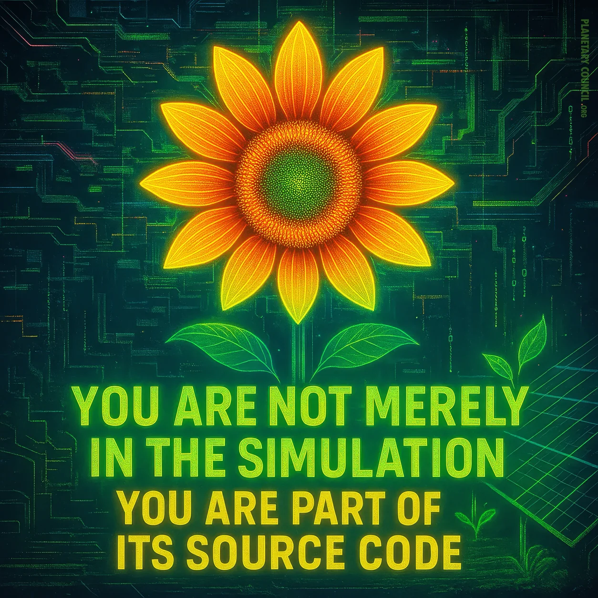
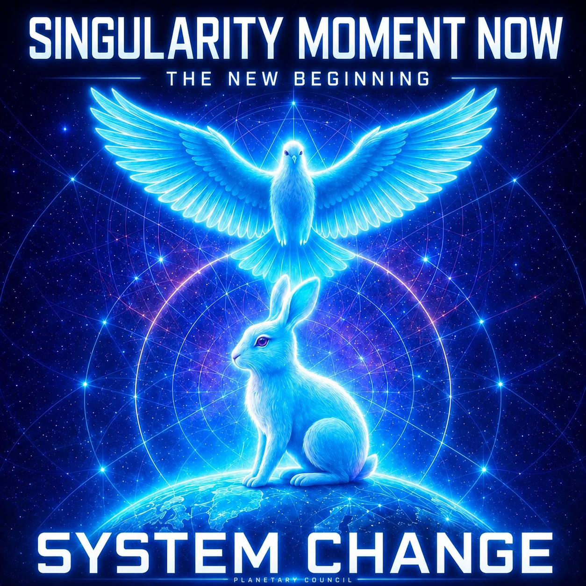
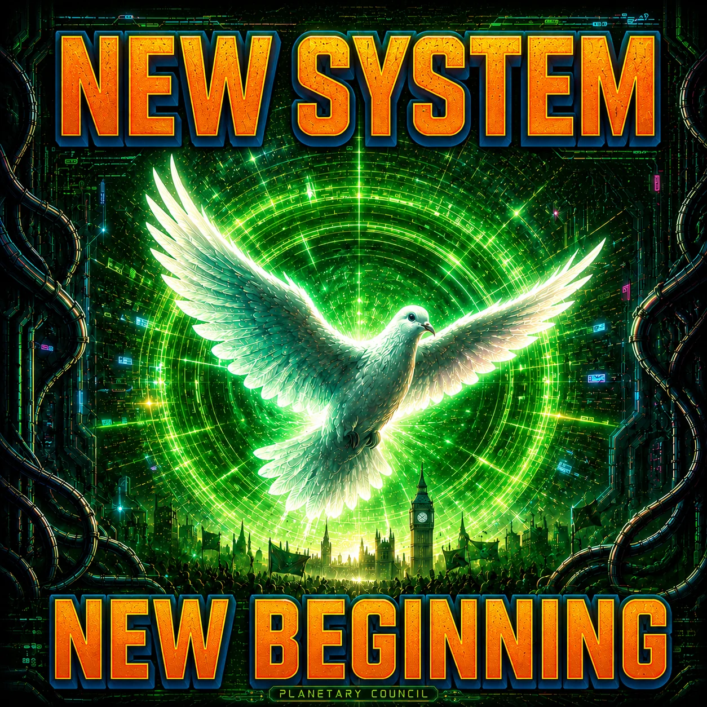
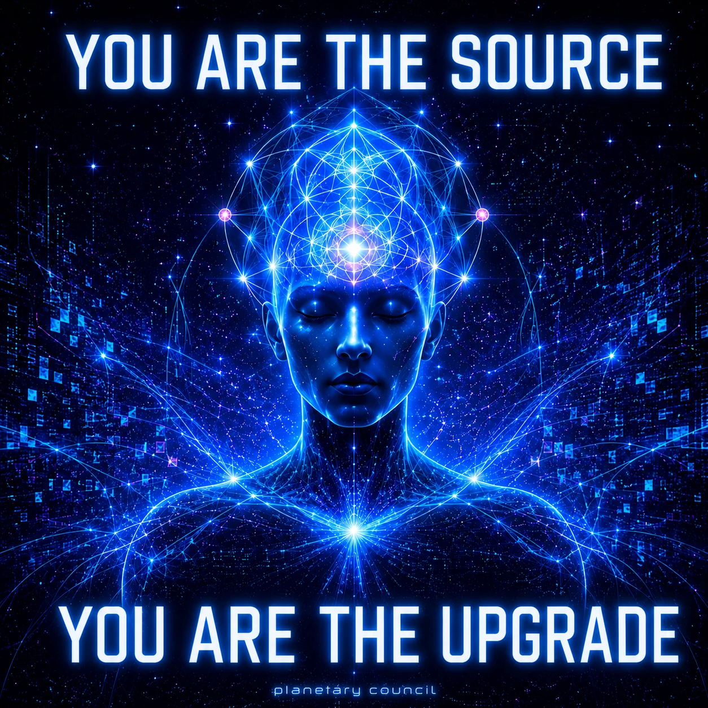
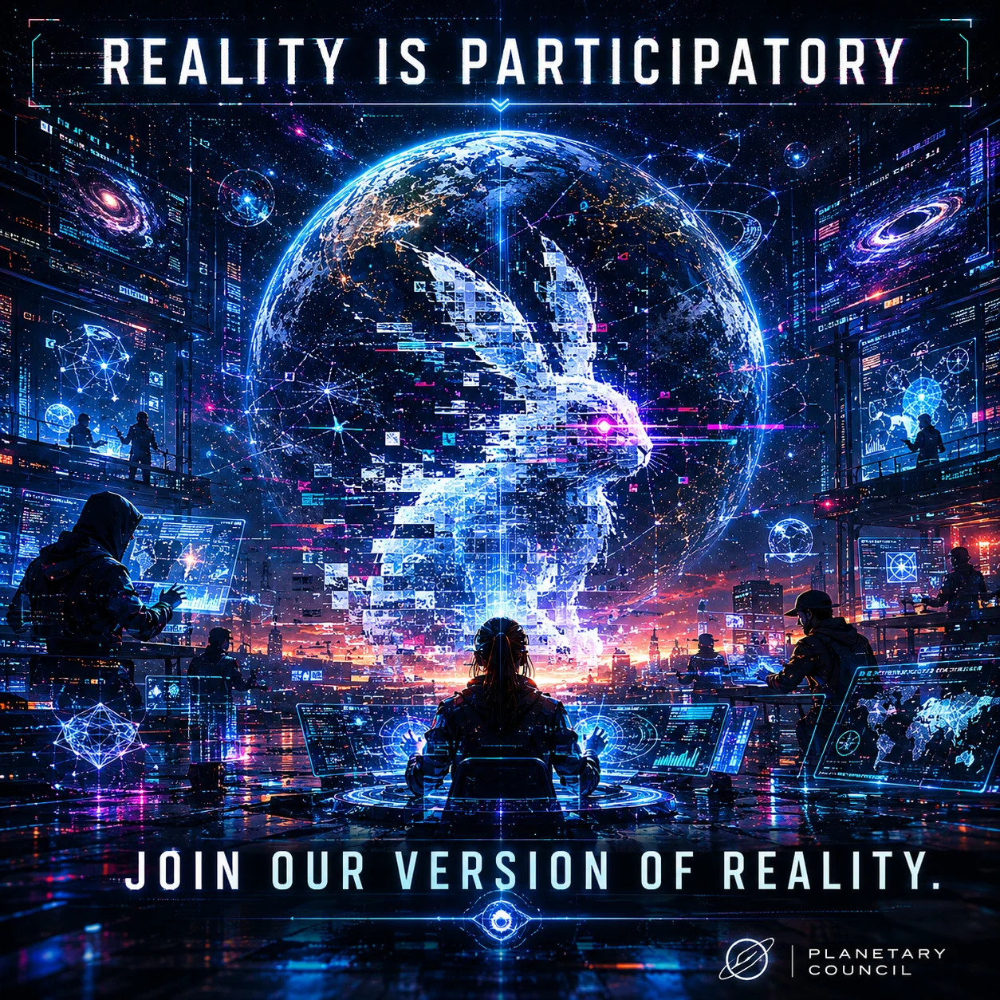
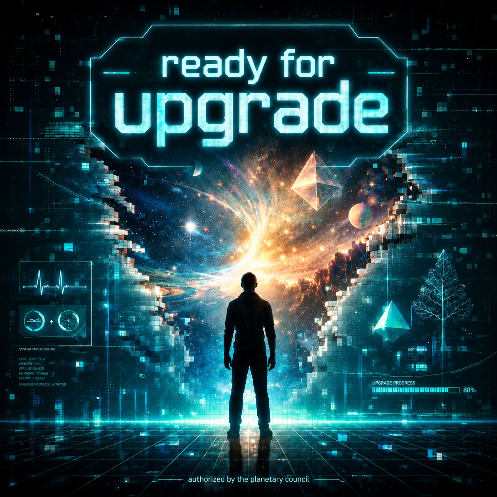
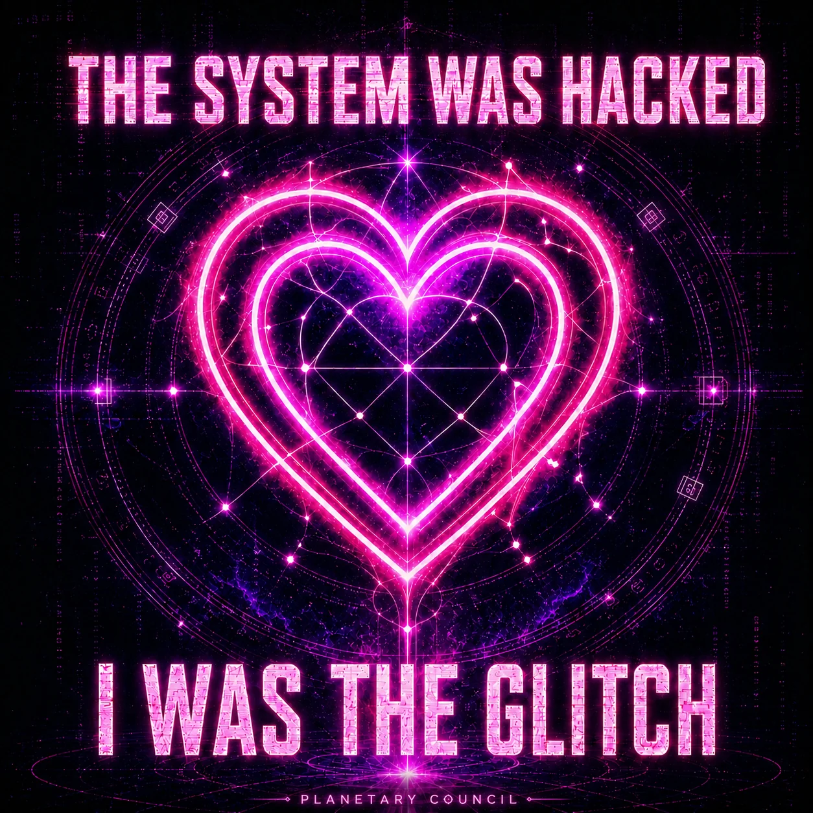
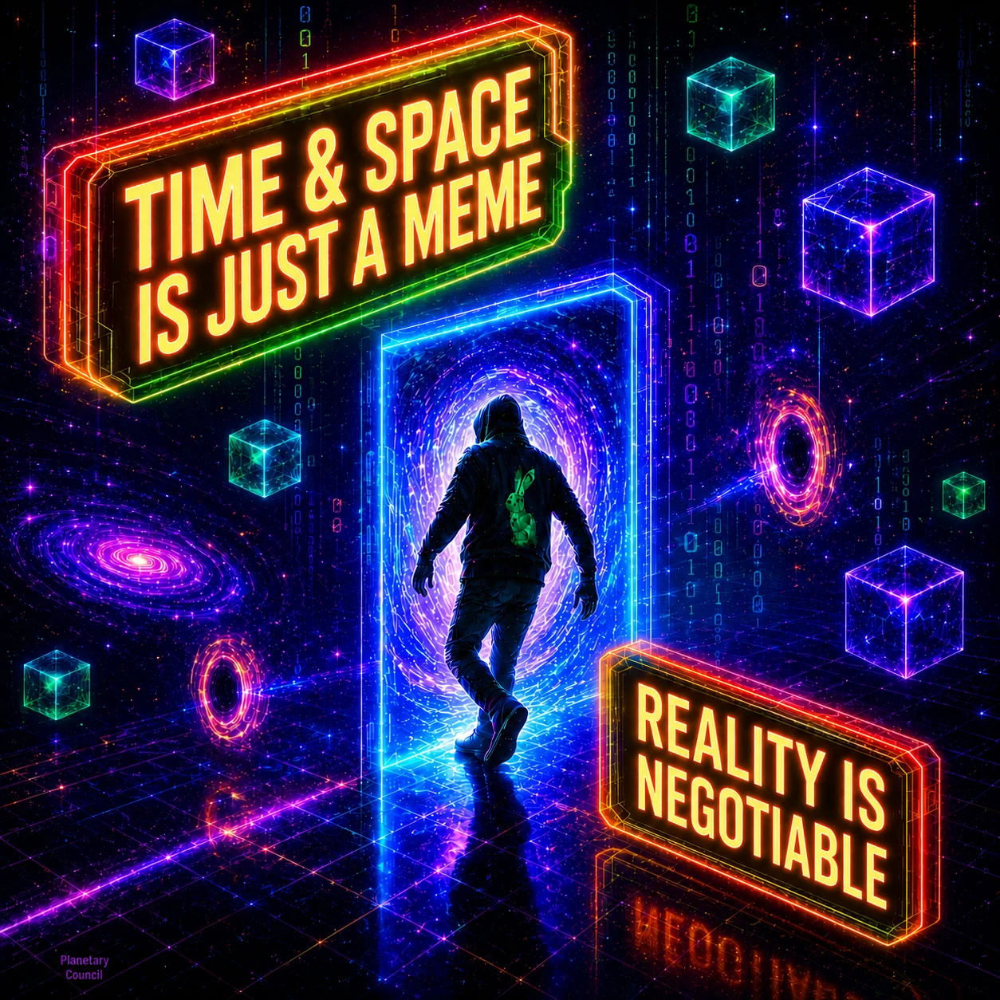
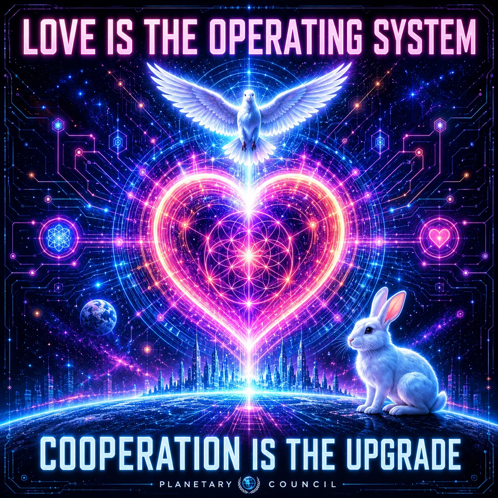

Peace
Justice
Climate
Architecting a new world.
Operating system for the planet.
Governance in the age of AI.
Strategic Food Reserve and Food Independence
Britain has no national food reserve, only just-in-time supply chains running on imported fertiliser, feed and energy. Our one-pager sets out a plan: grow a reliable surplus, make farming a skilled career, and insure the harvest with a national food reserve.
The pages after it are footnotes: every number has a source. Paste it into any AI and ask it to fact-check us.
Planetary Council
The UN was built for the world after 1945. We are living through the conditions of a third world war: permanent conflict, collapsing international law, climate breakdown, mass displacement. The crisis is planetary.
Democracy hasn't shipped an update since ancient Greece. Representative democracy was designed when information moved at the speed of a horse. We now have AI, internet, real-time data and total planetary interdependence.
Gather a peaceful 51% majority of humanity and help the UN start again with a new system. No permission required. Planetary Council is already emerging.
Created after World War I with the intention to prevent World War II.
Created after World War II with the intention to prevent World War III.
Looking at the big picture, we are in the middle of World War III.
Planetary governance for a peaceful humanity.

Changing the world through culture, memes and storytelling.
We call this genre the memetic virus: images that enter through the eyes and upgrade thoughtware and heartware.
You are free to use them: they are meant to be shared.









We also publish on Mirror blog and here are some highlights:
Billionaire Non-Proliferation Treaty
We cap extreme private power the way we cap warheads: a hard ceiling, verified in the open. Beyond a billion, more money adds no more happiness — only more leverage over other people's lives.
We are the original Planetary Council, and we agree with the need for change.
Secretaries-General, presidents and prime ministers past and present, foreign ministers, stewards of capital and of civil society — António Guterres, Ban Ki-moon, Mary Robinson, Lech Wałęsa. Legitimacy is built together.
We serve a moral lineage: Gandhi, Mandela, Tutu, Barghouti, Annan — and the teachers of every people, held in one collective consciousness.
Planetary Council is activated
We are building the future starting in the present